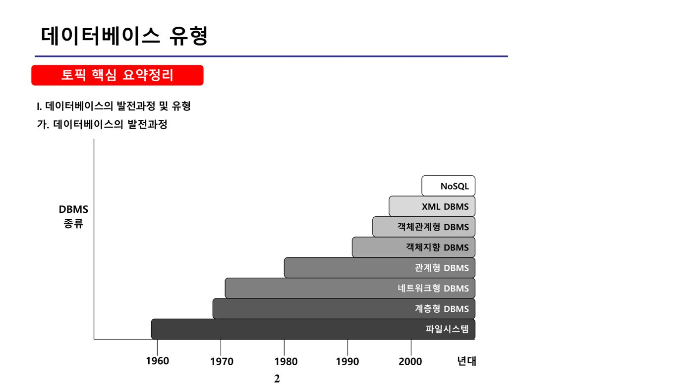
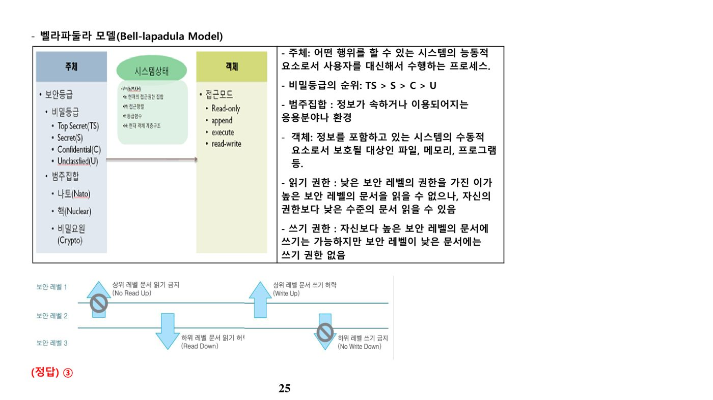
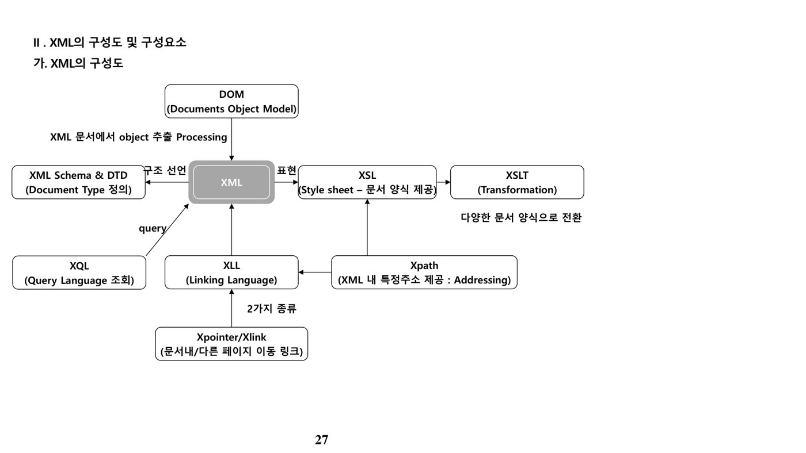
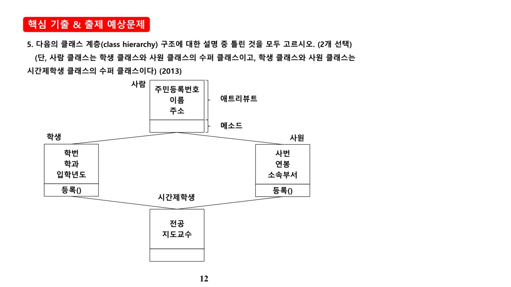

1. 데이터베이스 유형 (원본 p.2-13)
가. 데이터베이스의 발전과정

나. DBMS 유형별 특징
| 유형 | 특징 |
|---|---|
| 계층형 데이터베이스 | 데이터를 상하 종속적인 관계의 트리 형태로 저장. 액세스 속도가 빠르고 사용량 예측이 가능하나 변화하는 업무 프로세스 적응이 어려움 |
| 네트워크형(망형) 데이터베이스 | 계층형의 트리 구조를 망(Network) 형태로 확장. 레코드 간 다대다 관계를 포인터로 유지해 빠른 데이터 추출이 가능하나, 복잡한 시스템에서는 유지보수 비용이 큼 |
| 관계형 데이터베이스(RDB) | 1970년대 E.F. Codd가 제안한 관계형 데이터 모델 기반. 이차원 구조(열·행)에 정보를 저장하며 수학적 이론을 바탕으로 연산을 최적화할 수 있고, 4GL 형식의 질의어(SQL)로 쉽게 검색 가능 |
| 객체지향 데이터베이스(OODB) | 객체 모델 기반으로 정보를 저장·검색. 사용자 정의 데이터 타입 지원 및 상속성 명세 가능, 비정형 복합 정보 모델링과 참조 구조 기반 네비게이션 접근이 가능 |
| 객체관계 데이터베이스(ORDB) | 관계형 DB에 객체지향 개념을 접목해 기능을 확장. 사용자 정의 데이터 타입·참조 타입·중첩 테이블·대단위 객체·테이블 상속 관계를 지원 |
계층형 DBMS는 트리 구조, 네트워크(망)형 DBMS가 망(Network) 구조로 정보를 표현한다는 차이를 혼동하지 않도록 유의한다(IMS는 계층형, DB2·Oracle·SQL Server는 관계형, Objectivity·O2·Versant는 객체지향, UniSQL·Oracle은 객체관계형 제품의 예).
다. 객체지향 데이터 모델의 핵심 개념
객체지향 데이터 모델에서 속성과 마찬가지로 메소드도 하위 클래스로 상속될 수 있으며, 메소드의 수행은 객체에 전달되는 메시지에 의해 이루어진다. 객체의 메소드는 오버로딩(Overloading)을 통해 여러 목적으로 사용될 수 있다. 객체식별자(OID: Object IDentifier)는 관계 데이터 모델의 주키와 달리 한 번 생성되면 값이 변하지 않으며, 값이 변경되어야 한다면 OID를 삭제하고 재생성해야 한다.
한 클래스의 속성(Attribute)과 그 속성의 도메인이 되는 클래스들 간의 관계는 클래스 구성 계층(class composition hierarchy)이라 하며, 상위 클래스와 하위 클래스 사이의 IS-A 관계는 클래스 계층(class hierarchy)·상속 계층(inheritance hierarchy)이라 한다.
2. 데이터베이스 품질 (원본 p.14-17)
가. 관점별 데이터 품질 관리 대상
| 대상 조직 | 데이터 값 | 데이터 구조 | 데이터 프로세스 |
|---|---|---|---|
| CIO/EDA(개괄적 관점) | 데이터 관리 정책 | - | - |
| DA(개념적 관점) | 표준 데이터 | 개념 데이터 모델, 데이터 참조 모델 | 데이터 표준관리, 요구사항 관리 |
| 모델러(논리적 관점) | 모델 데이터 | 논리 데이터 모델 | 데이터 모델 관리, 데이터 흐름 관리 |
| DBA(물리적 관점) | 관리 데이터 | 물리 데이터 모델, 데이터베이스 | DB 관리, DB 보안 관리 |
| 사용자(운용적 관점) | 업무 데이터 | 사용자 뷰 | 데이터 활용 관리 |
나. 데이터 품질기준·품질관리 프로세스·성숙수준
| 구분 | 설명 |
|---|---|
| 데이터 품질기준 | 데이터 유효성 측면(정확성·일관성), 데이터 활용성 측면(유용성·접근성·적시성·보안성) |
| 데이터 품질관리 프로세스 | 품질기준 향상에 필요한 프로세스로 요구사항 관리·데이터 구조 관리·데이터 흐름 관리·데이터베이스 관리·데이터 활용 관리·데이터 표준관리·데이터 오너십 관리·사용자 뷰 관리 등이 있으며, 품질기준과 반드시 1:1로 대응하지는 않고 여러 기준과 동시에 연관되기도 함 |
| 데이터 품질관리 성숙수준 | 1단계(도입)~5단계(최적화)로 정의되며, 성숙수준이 높을수록 체계적이고 정교한 관리가 수행됨을 의미(도입→정형화→통합화→정량화→최적화) |
| 품질 진단 종류 | 설명 |
|---|---|
| 데이터 값 진단 | 데이터 값과 관련된 품질기준을 적용해 오류내역을 산출하고 주요 원인을 분석해 개선사항을 제안 |
| 데이터 구조 진단 | 데이터 모델링 관점에서 데이터 품질을 진단 |
| 데이터 관리 프로세스 진단 | 현행 데이터 관리 프로세스를 분석해 문제점을 도출하고 이를 개선할 수 있는 핵심 업무 프로세스를 표준화하여 재설계 |
데이터 프로파일링은 데이터의 중요 정보와 통계 값을 수집하는 정보분석 기법으로, 데이터 값 진단의 기초 자료로 활용된다. "핵심 업무 프로세스를 최적화한다"는 설명은 데이터 구조 진단이 아니라 데이터 관리 프로세스 진단에 해당한다는 점이 출제 포인트다.
3. 데이터베이스 보안 (원본 p.18-25)
가. 데이터베이스 보안의 필요성
| 구분 | 설명 |
|---|---|
| 기업 정보의 가치 중요성 증대 | 초경쟁 경영환경에서 신속한 의사결정·민첩한 대응을 위한 정보 중요성 증대 |
| 정보시스템 보안 위협 증가 | 해킹·웜/바이러스 증가 및 해킹 도구로 인한 악의적 정보 노출범위 확대 |
| 데이터베이스 보안 미비 | 네트워크·시스템 보안에 치중되어 상대적으로 소홀해지는 보안 사각지대 |
| 실수에 의한 정보 변경 방지 | 비의도적 행위로 발생하는 정보 침해 예방 |
나. 정보 노출 위협 유형과 보안 요구특성
| 구분 | 설명 |
|---|---|
| 불법 접근 | 비인가자의 DB 접근, 인가자의 인가범위를 벗어난 데이터 접근 |
| Aggregation(조합·집단화) | 낮은 보안등급의 정보조각들을 조합해 높은 등급의 정보를 획득. 개별 데이터 항목보다 종합정보의 보안등급이 높은 경우 심각(예: 각 지사의 영업실적을 조합해 대외비인 총 매출실적 산정) |
| Inference(추론) | 보안등급이 없는 일반 사용자가 정당하게 접근한 비보안 정보로부터 기밀정보를 유추하는 행위 |
| 요구특성 | 설명 |
|---|---|
| 인증(Authentication) | DB에 접근하는 사용자가 정당한 사용자임을 확인. 정당한 인증절차 없이는 접근 불가 |
| 가용성(Availability) | 부당한 서비스 거부를 감지·예방해 정당한 사용자가 필요할 때 데이터를 사용할 수 있도록 보장 |
| 무결성(Integrity) | 정보의 부적절한 변경을 예방·감지 — 타인이 임의로 정보를 변경하지 못하도록 함 |
| 기밀성(Confidentiality) | 정보의 부적절한 접근을 방지·제지·감시 — 일부 부서 전용 정보가 다른 부서에 노출되지 않도록 함 |
다. 접근통제 기법
| 구분 | 주요 내용 |
|---|---|
| 접근통제(Access Control) | 허가받지 않은 사용자의 DB 자체에 대한 접근을 방지(예: 계정·암호, RBAC). 각종 조작의 주체를 파악하는 트랜잭션 로그 파일 자료 제공 |
| 허가 규칙(Authorization Rules) | 정당한 절차로 DBMS에 접근한 사용자라도 허가받지 않은 데이터에는 접근하지 못하도록 방지 — 뷰를 통해 사용자별로 특정 투플의 속성 단위까지 세분화 가능 |
| 가상 테이블(Views) | 가상 테이블로 전체 DB 중 사용자가 허가받은 관점만 볼 수 있도록 한정 |
| 암호화(Encryption) | 데이터를 암호화해 형태를 변형, 가독성을 원천적으로 봉쇄 |
권한부여 기법으로는 모든 사용자의 프로파일을 하나의 테이블로 종합 관리하는 권한 부여 테이블(Authorization Table), 뷰(View) 자체를 활용한 권한부여(단, 갱신·삽입·삭제 연산에는 제약), SQL의 GRANT/REVOKE 명령어 등이 있다. 권한부여 대상 데이터 객체의 크기를 투플의 속성 단위까지 세분화하는 것도 뷰를 통해 가능하다는 점에 유의한다.
라. 필수 접근 제어(MAC)와 벨라파둘라 모델
필수 접근 제어(MAC: Mandatory Access Control)는 데이터 객체에는 비밀 등급, 사용자에는 허가 등급을 지정해, 사용자의 허가 등급이 데이터의 비밀 등급보다 크거나 같은 경우에 판독(읽기)이 가능하고, 반대로 허가 등급이 비밀 등급보다 작거나 같은 경우에 갱신(쓰기)이 가능하도록 통제한다("허가 등급이 비밀 등급보다 커야 갱신 가능"은 오답). 보안 등급은 극비(Top Secret) > 비밀(Secret) > 대외비(Confidential) > 일반(Unclassified) 순이다.

벨라파둘라 모델은 기밀성을 강조하는 Rule-based 접근통제 모델로, 읽기 권한은 자신의 권한과 같거나 낮은 수준의 문서만 읽을 수 있으며(No Read Up), 쓰기 권한은 자신보다 높은 보안 레벨의 문서에는 쓸 수 있지만(Write Up) 보안 레벨이 낮은 문서에는 쓸 수 없다(No Write Down)는 원칙으로 정보가 높은 등급에서 낮은 등급으로 유출되는 것을 차단한다.
4. XML (원본 p.26-34)
가. XML의 개념과 특징
XML(eXtensible Markup Language)은 웹 환경에서 데이터를 구조화하고 교환하기 위해 표준으로 개발된 확장 가능한 마크업 언어다.
| 특징 | 설명 |
|---|---|
| 단순성 | SGML을 간략화 — 사용되지 않는 기능은 없애고 주요 기능만 수용 |
| 개방성 | HTML과 함께 Web에서 사용 가능하며 메타데이터를 주고받을 수 있음 |
| 확장성 | 자신만의 태그를 생성할 수 있는 자체기술(Self-describing) 구조 |
| 사람·기계 모두 이해 가능한 구조 | 데이터 비교·취합이 용이 |
| 내용과 표현의 분리 | 이용자가 원하는 포맷으로 변환 가능해 재사용성 증가 |
| 계층적 구조 | 구조 검색·전문 검색 모두 가능 |
| 유니코드 | 여러 국가 언어 지원 |
나. XML의 구성도

다. XML 관련 구성요소
| 구성요소 | 설명 |
|---|---|
| XML DTD | XML Document Type Definition — XML 문서의 형태를 일관된 구조로 정의, XML 유효성 검증에 사용 |
| XML Schema | XML DTD를 대체하기 위해 개발된 고급 데이터 정의 언어. DTD보다 복잡한 데이터 타입 선언이 가능 |
| Xpath | XML 경로식에 탐색 조건을 수용할 수 있도록 확장해 질의를 표현하는 언어 |
| Xquery | XML 표준 질의어 — XML 파일로부터 데이터베이스처럼 원하는 정보를 추출. SQL이 아닌 W3C 표준 FLWOR(For, Let, Where, Order by, Return) 명령어 사용 |
| XSL / XSLT | XSL은 XML 데이터를 여러 형태로 표현하기 위한 스타일시트 명세 언어. XSLT는 XSL의 일부로 XML 문서를 다른 유형(HTML 등)의 문서로 변환 |
| XLL | XML 요소 간 연결·관계를 표시 — XLink(Hyper Link 인식·처리), XPointer(XML 문서 내 요소의 주소) |
XML 문서 작성 규칙으로는 첫 줄에 반드시 XML 선언 태그를 포함해야 하고(둘째 줄에 스타일시트를 포함할 필요는 없음), 루트 노드는 문서 중 반드시 하나여야 하며, 대소문자를 구분하고, 모든 요소는 닫는 태그를 가져야 하며 올바르게 중첩되어야 한다.
📚 전체 기출·예상문제 (11문항) — 원문 수록
본 강좌 원본 PDF에 수록된 기출·예상문제를 빠짐없이 원문 그대로 정리했습니다. 정답·해설은 강의 원문 기준입니다.
